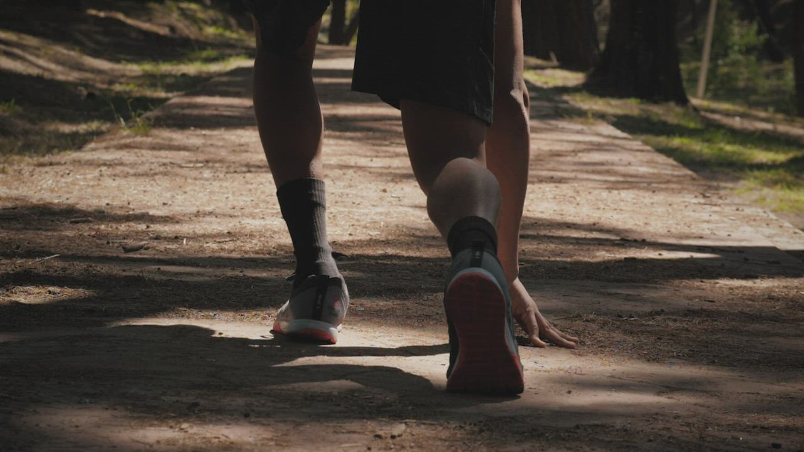
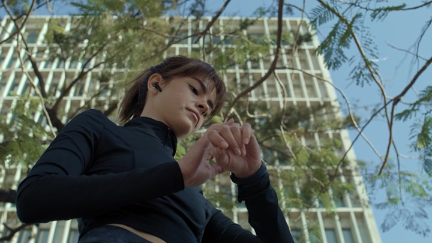
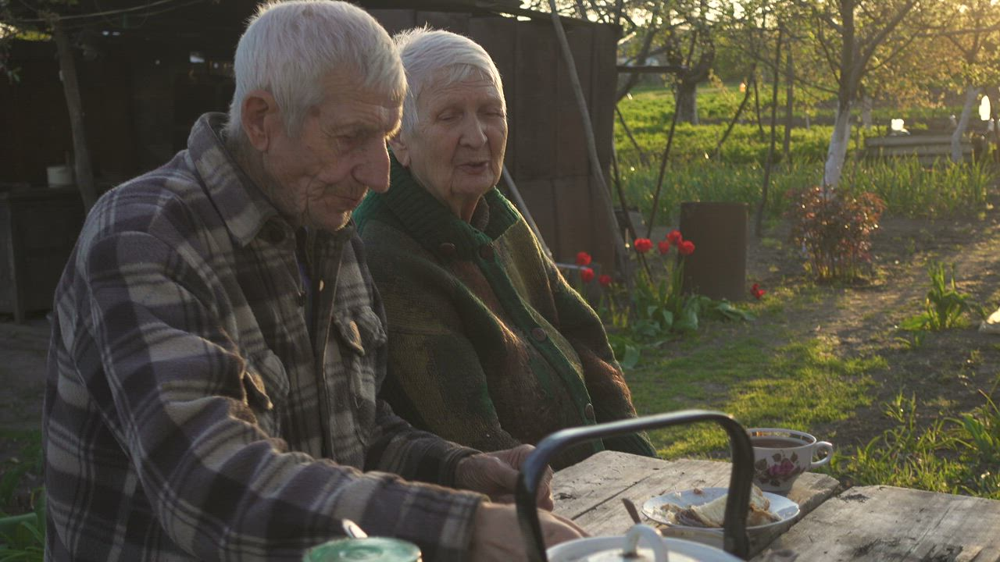

Zone 2 is the most underrated drug there is.
Add years. Add life to them.
Scroll ↓
Most healthcare waits for something to break. Telo is built for the decades before that, when small, measurable changes add the most life.
Mission
Make preventive, data-led medicine the default for every adult, not a luxury for a few.
Vision
A world where people know their biological age as well as their birthday, and know how to lower it.
Audience
Health-curious adults 30–60, and the clinics and employers who care for them.
The name
From telomeres, the protective caps at the ends of our chromosomes. They shorten as we age. Telo exists to protect them.
Every claim is backed by a number and every number by a source. We show our working.
Clinical rigour without the clinic chill. We talk like a friend who happens to be a doctor.
Aging is a process you can steer, not a sentence. We frame data as a way forward.
Lots of white space, slow motion and quiet colour. Never fear-based, never shouty.
We say
We don’t say
Telo sells to two audiences. The member pays with their own money and their own blood. The partner buys Telo for their patients or their people. Every design decision should make sense to both.

Product director at a fintech · Brooklyn, NY
“I track my sleep, my steps and my spending. Why can’t I track how I’m actually aging?”
Goals
Frustrations
Behaviours
Where she finds us
How Telo wins Maya
One clear number (her Telo age), a clinician who explains the why, and three small actions a day that fit around a full calendar. She renews when she sees the number fall.
Owner, 6-physician private practice · Austin, TX
“My patients ask about longevity every week. I can’t build a lab, an MRI network and an app on my own.”
Goals
Frustrations
What he needs to see
Where he finds us
How Telo wins Lukas
A white-label service line live in 30 days, with Telo’s lab and imaging network behind his brand and a revenue model that pays for itself in the first quarter.
Also buying
Heads of People at 200–5,000-person companies who want a benefit employees actually use, and can show the board fewer sick days.
Not for
People looking for urgent or acute care, quick-fix “biohacks” or anti-aging miracles. Telo is steady, evidence-based and long-term.
One ring, three meanings.
The “o” is an open ring sealed by a lime dot. It’s a telomere cap protecting a strand, a progress ring closing as your health improves, and a clock face for time well spent.
The rest of the wordmark is drawn from the same monoline stroke with soft, rounded terminals. The t and l end in a gentle hook, a small forward motion that echoes the ring.
Clear space = ring diameter (⌀) on all sides
Min size 64px / 16mm wordmark · 16px symbol
✕ Don’t stretch
✕ Don’t recolour
✕ Don’t rotate
✕ Don’t place on busy colour
The symbol is also a component.
On screen, the ring becomes Telo’s progress indicator for loaders, scores and goals. The dot only snaps in when a goal is reached, so the brand moment marks a real achievement.
A forest-floor palette: deep pine for trust, bone for calm, and one electric lime that signals life. Lime is the spice. Use it on a dot, a CTA or a good result, never as wallpaper for a whole page.
Usage ratio
Contrast: Pine on Bone 11.4:1 (AAA) · Pine on Lime 9.9:1 (AAA) · Bone on Pine 11.4:1 (AAA). Never set lime text on bone.
Primary · Geist · 300–600
Aa
ABCDEFGHIJKLMNOPQRSTUVWXYZ
abcdefghijklmnopqrstuvwxyz
0123456789 −+%↑↓
Headlines, UI and body. Light (300–350) at display sizes with tight tracking (−3.5%); Regular for body.
Accent · Instrument Serif Italic
Aa
life · people · today
compounding · person
One or two emotional words per headline. Never a full sentence, never in UI.
Data · Geist Mono
01
APOB 72 MG/DL
TELO AGE −4.6 YRS
SECTION LABEL
Labels, numbers, timestamps and eyebrows. Uppercase, 12px, +2% tracking.
Add years. Add life to them.
Longevity
Your body, in 112 numbers
A care team that never clocks out
Telo finds what your annual check-up misses. 112 biomarkers, a full-body MRI and a clinician-led plan to keep you younger for longer.
The Telo method
01 Glow: living gradients that drift slowly, like light through leaves
02 Hairline grid: 1px lines at 12% opacity, like a lab notebook
03 Rings: progress, scores and time
04 Range bars: optimal zones, not red flags
05 Glass chips: floating data, blurred and soft
06 Pill CTA with the pulse dot, a living signal
Real people in natural light, mid-motion and outdoors. Greens and soft daylight carry the palette into photography. No stock smiles, no lab-coat poses, no fear.

Do
Daylight, greenery, honest skin, people mid-action, a clinician who listens.
Don’t
Blue clinical lighting, syringes in close-up, staged smiles, anti-aging clichés.
Membership card
Telo Test
112 biomarkers · at-home kit
At-home test kit
Business cards
Telo age · updated
34.8
App splash
Clinic wayfinding